2.1Scissor Lift Table
CompleteDesigned a scissor lift table assembly (350 kg payload, 1100×700 mm) in PTC Creo Parametric 12, integrating custom-modelled parts with catalogue components including a Tr 28×5 lead screw (DIN 103-2), FK/FF 17 flange bearings, SKF plain bushes and guide rollers, and Norelem castors, all tolerance-fitted to ISO standards. Deliverables included a fully dimensioned spindle detail drawing and complete assembly drawing derived directly from the 3D model. Structural verification covered spindle tension/torsion, thread surface pressure, pin shear, and weld fatigue per FKM guidelines.
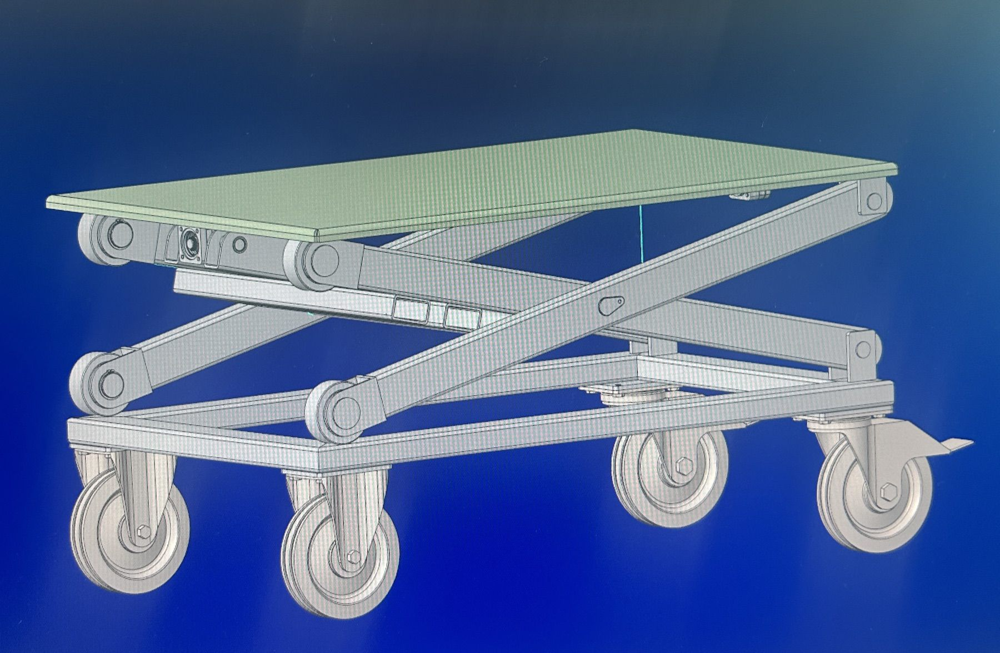
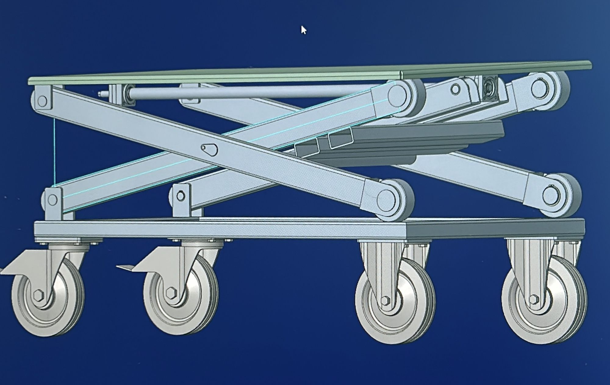
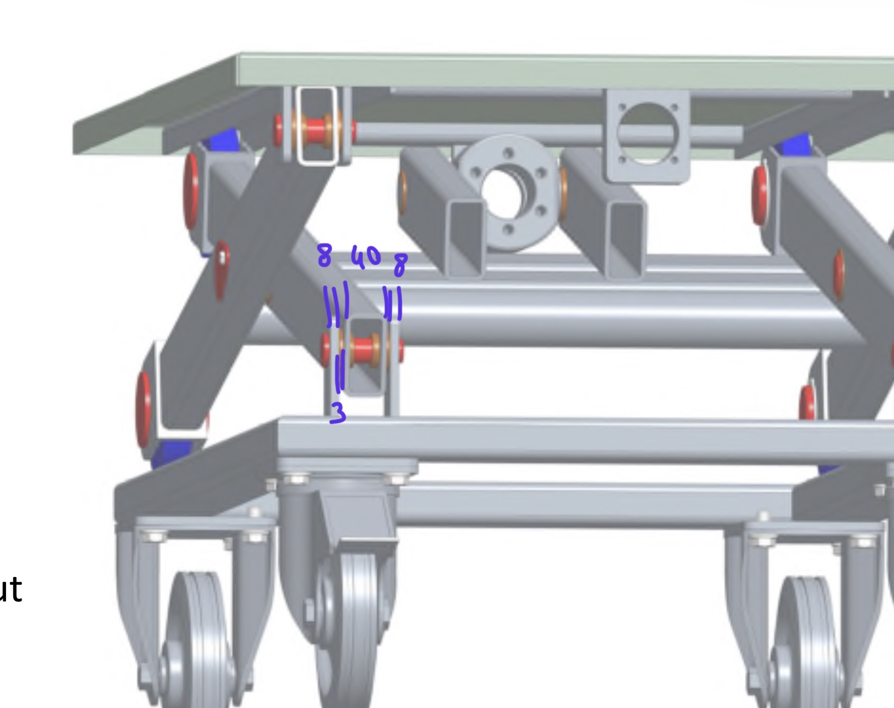
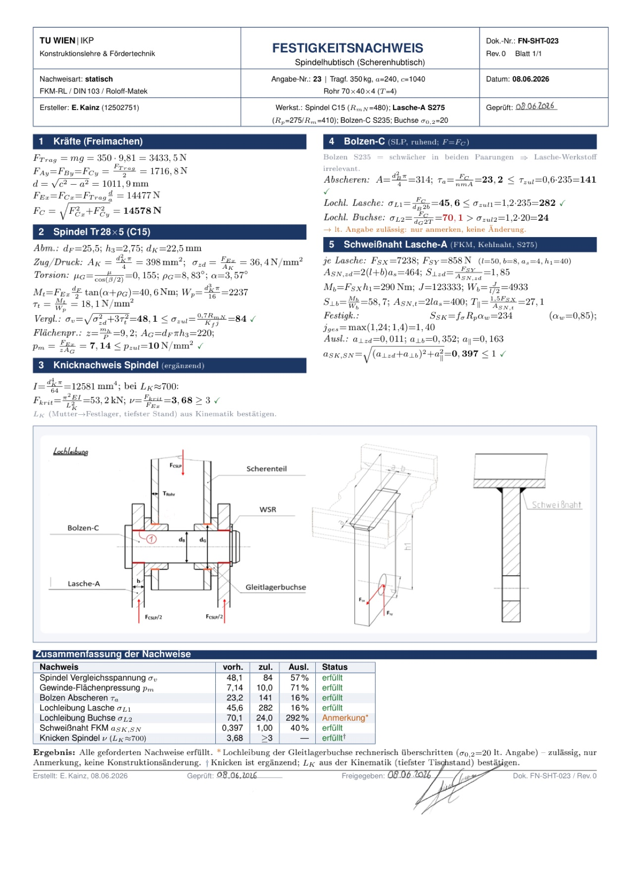
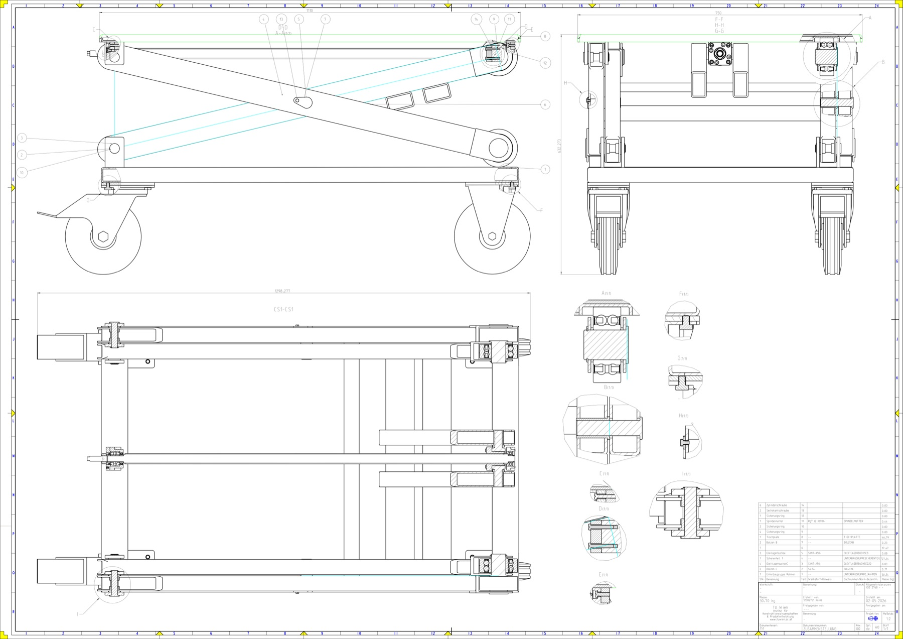
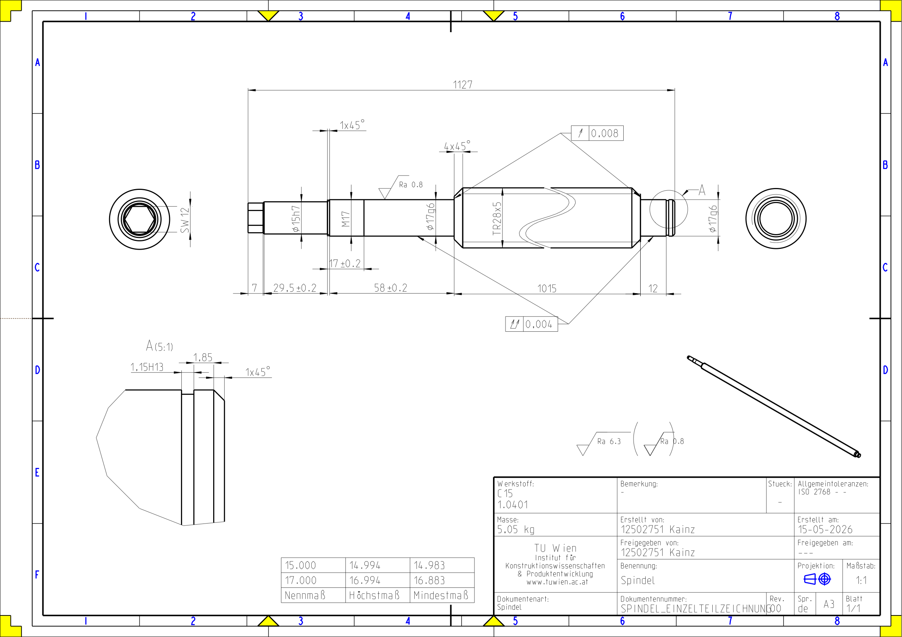
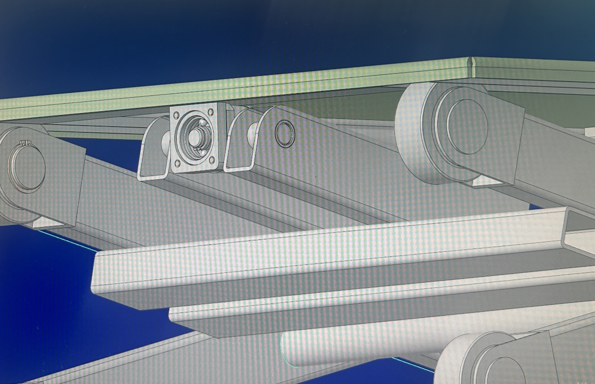
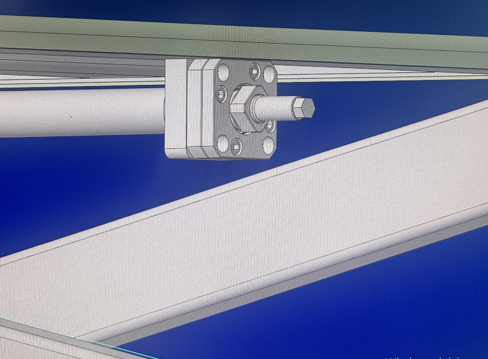
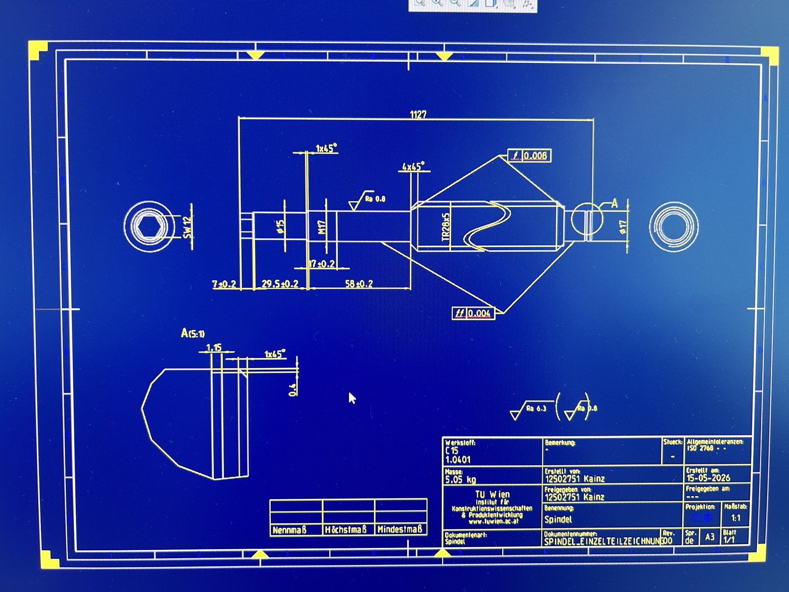
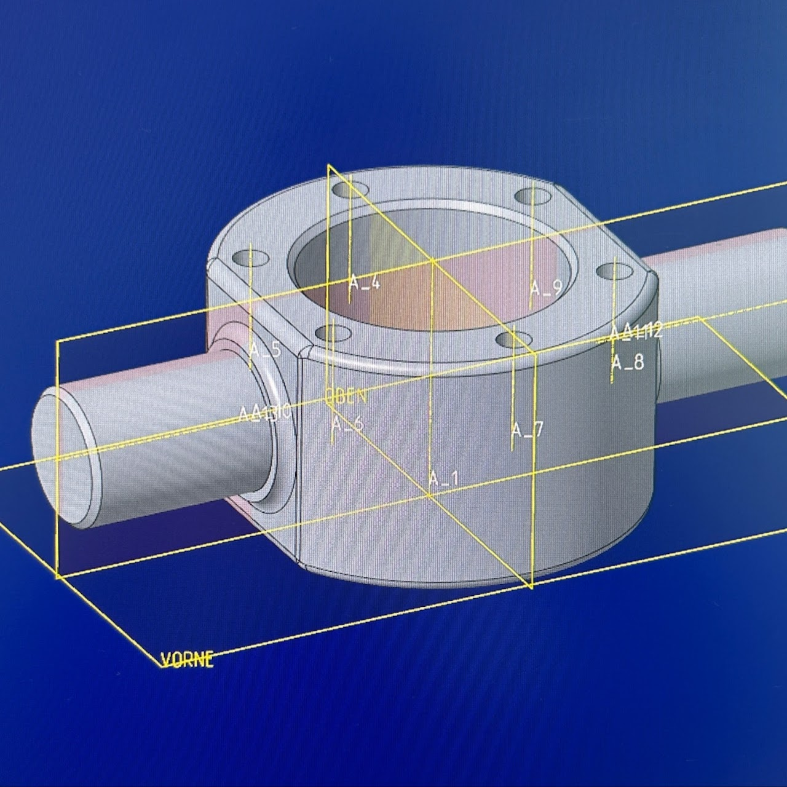
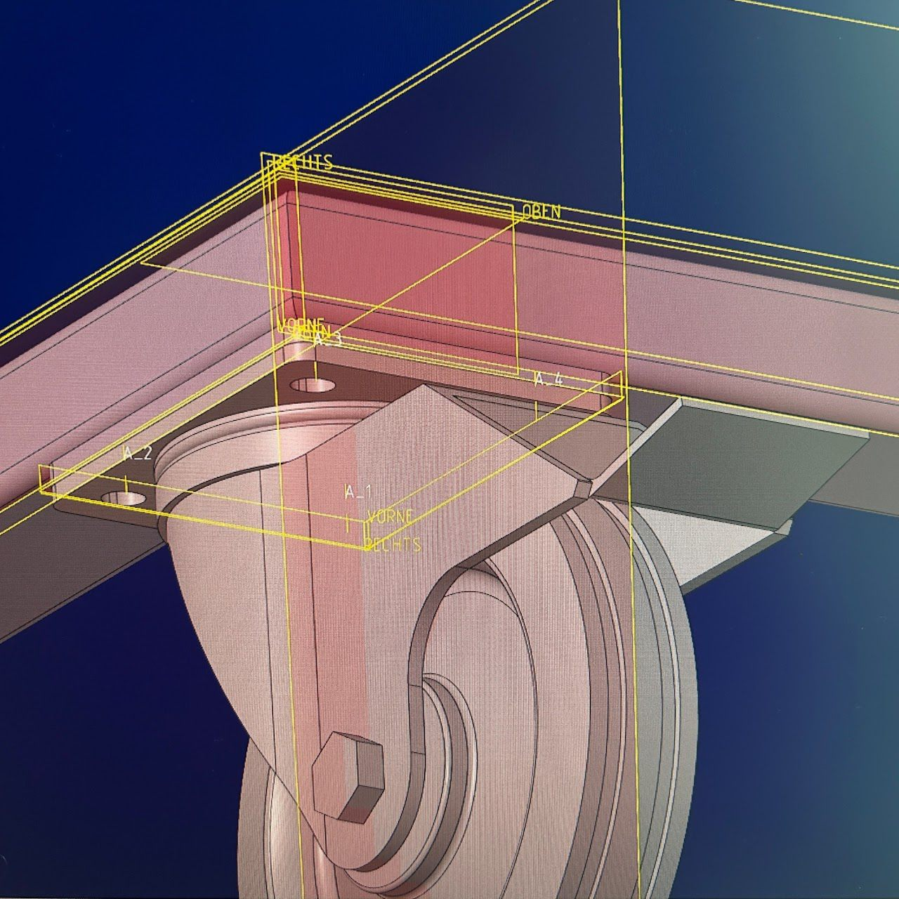
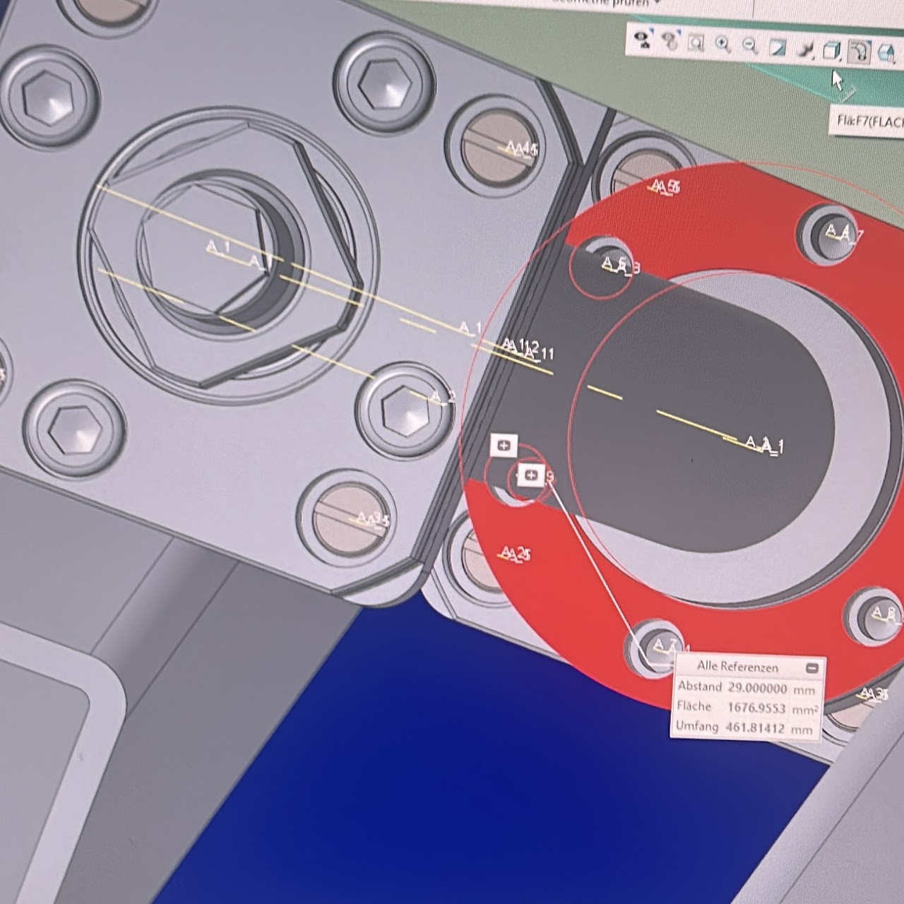